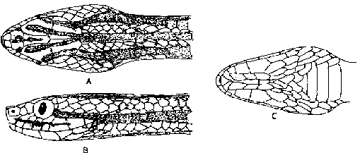
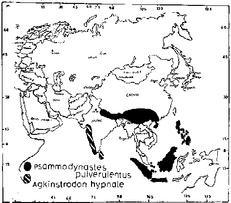

|
Digitized Inventory of Animal Resources: Reptilia ( Snakes ) Principal Investigator: Dr. R. J. B Alfred, Co-Investigator: Dr. Rama Krishna, Contributed by:
Dr. R.C.Sharma |
Psammodynastes pulverulentus Boie 1827
Taxonomic
Details
----- Scientific Name
----- Classification
----- Synonyms
----- Common Names
Other
Biological Details
----- Habit and
Habitat
----- Distribution
---------- Extent of
Occurrence
---------- Area of occurrence
---------- Altitude
---------- Population
-----
Conservation Status
-----
Diagnostic
Features
-----
Breeding system
Miscellaneous
Information
Literature
Genus Psammodynastes Gunther 1858
Maxillary teeth 10 or 12 or 13 small anterior teeth, followed by 2 much enlarged, fang-like ones, then after a small interval, 5 small teeth followed by 2 very large grooved fangs; head distinct from neck, with angular canthus rostralis and concave loreals, eyes are large, with vertically elliptic pupil; body is cylindrical; scales are smooth, without pits, in 17 : 17 : 15 rows; ventral shields are rounded; tail is moderately long; subcaudal shields are paired. Hypapophyses are present on the posterior dorsal vertebrae. This genus includes two species out of which one Psammodynastes pulverulentus comes under the scope of this work, which is available in Indian subcontinent.
Scientific Name : Psammodynastes pulverulentus Boie 1827
Family :
Classification: Genus .
Synonyms:
Common Names: mock
viper
HABIT & HABITAT Inhabits wooded places in the plains and hills. Barbour (1912, p. 128) and Mertens (1930, p. 314) mentioned that it occurs in highland from 700 to 1200 m. altitude, and Forcart (1953, p. 383) observed that it was captured in the Lasler sunda expedition in the coastal plain at 350 m. height. Plucky and vicious; feeds mainly on frogs and lizards; viviparous, giving birth to 3-10 young at a time. Shaw (1941) saw one strike a Natrix subminiata which died in 16 minutes.
Distribution:
Altitude:
Conservation status: Fairly Common in wooded country, in hilly districts in throughout its range.
Length : The maximum length reaches up to 600 mm (Wall) another female measured 510 mm., tail 90 mm.
Body : Hemipenis extends up to the 10th caudal plate, forked opposite the 6th caudal plate; the complete organ bears spines which are almost uniform in size, with the exception of 2 large, thick basal ones on either side of the sulcus; proximal to the point of forking the spines show no definite arrangement, but opposite and distal to that point. They are set is oblique rows that join on a line opposite the sulcus; the spines of each row are joined basely by soft tissue. The sulcus is divided some distance proximal to the point of forking and has fairly prominent, smooth lips, which are almost entirely devoid of spines throughout (Pope).
Scales : Scales smooth, without apical pits, in 17 : 17 : 17 rows. Ventrals rounded, 146-175. Subcaudals 44-71, paired. Anal 1.
Colouration : The colour is very variable, ranging from yellowish or greyish to dark brown or black, with black spots or streaks, sometimes arranged in pairs. usually a longitudinal stripe in the mid-dorsal line and three longitudinal stripes on each flank. Head with dark symmetrical markings. Lower parts thickly powdered with brown or gray and with dark spots or longitudinal lines. Body cylindrical. Head distinct from the neck. Snout short, truncate in profile, slightly turned up in the adult, with angular dorsolateral edge (canthus rostralis) and the area between the nostril and the eye concave. Eye large, with vertically elliptic pupil.
Breeding Biology : viviparous, giving birth to 3-10 young at a time.

Psammodynastes
pulverulentus Boie : Head : A. Dorsal view B. Lateral view C. Ventral
view
